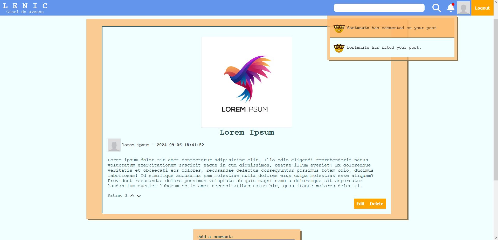
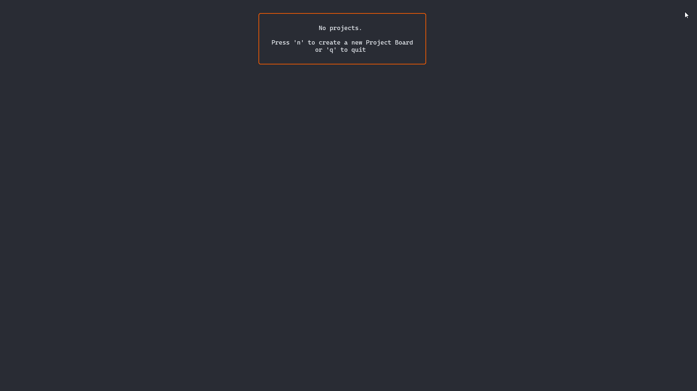
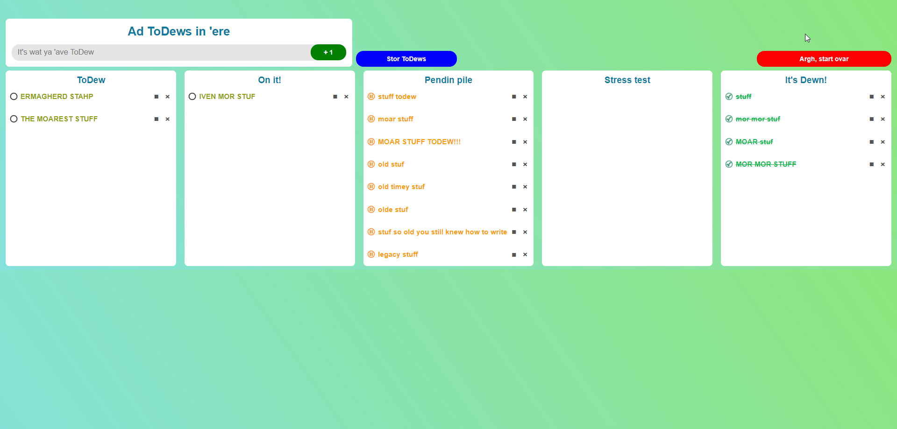
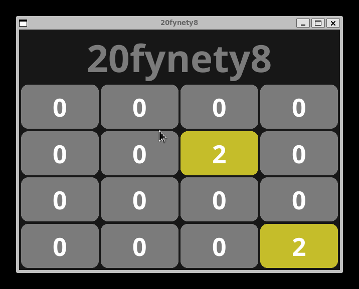
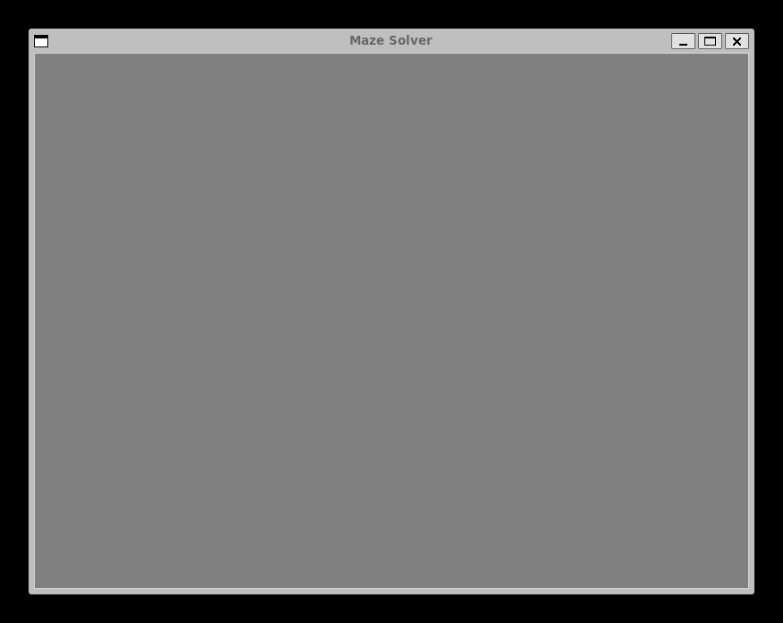

Pedro Fortunato
Backend Developer
I'm a backend developer focused on building clean, scalable systems and streamlining development workflows. My core expertise is in Go, with experience designing REST APIs, WebSocket-based real-time systems, gRPC services, and event-driven architectures to support high-concurrency workloads.
Lately, I’ve been deepening my knowledge of infrastructure, working with Docker and AWS in production, and experimenting with Terraform, Kubernetes, and GitHub Actions in my personal projects. I'm especially interested in roles where backend development intersects with infrastructure, automation, and developer experience—areas where thoughtful engineering can remove friction and improve team velocity.

Projects
Lenic
“A social network, it started as a small classroom experiment where colleagues could post and interact over the local network. Over time, it evolved into my most in-depth side project, encompassing a fully-featured backend handling both HTTP and websockets, a mailing microservice, and a gRPC API. I recently reworked the backend and am currently wiring and debugging the frontend in preparation for deployment on AWS. I’ve already built a Terraform skeleton to provision EC2 and RDS instances, bringing the project closer to a production-ready state.
Technologies used:



FizzBuzz API
A production-ready REST API built in Go as part of a one-week coding challenge. It extends the classic fizz-buzz with configurable parameters and includes JWT authentication, input validation, database-backed request statistics with pagination, Swagger docs, Docker Compose deployment, and full unit/integration tests — all in a clean, modular architecture designed for maintainability.
Technologies used:
Double or Nothing Dice
This project was developed in a week as a coding challenge for a job interview at Vertsa, where i currently work. Double or Nothing Dice is a web-based betting game developed in Go as part of a take-home assignment that led to my current role at Vertsa Play. The game features real-time gameplay via WebSockets and a REST API for user management, including JWT authentication and email verification. Redis is used to persist the current game state, while PostgreSQL handles user data and stores the game upon finishing. Containerized with Docker for straightforward deployment. Players can register and authenticate through email verification, amd play the game, place bets, and manage their balance through Postman.
Technologies used:



Kanboards
A Trello-style task board for the command line, built using Go and the BubbleTea framework. Designed around the Elm architecture (Model-View-Update), this project served as a real-world implementation of my custom Go Data Structures library, with SQLite for persistent storage.
Technologies used:
ToDew
A browser-based task manager with drag-and-drop task organization. Built to explore front-end fundamentals like DOM manipulation and event handling, this project reinforced how client interactions integrate with back-end logic in full-stack flows.
Technologies used:


20fynety8
A 2048 clone built in Go with the Fyne GUI framework, designed to practice matrix manipulation and local game state management. While GUI-heavy, the logic emphasizes algorithmic problem-solving and board state updates.
Technologies used:
Maze Solver
A visualization tool for depth-first search (DFS), where a random maze is generated and then solved. Built in Python with Tkinter, this project demonstrates recursive algorithms and basic pathfinding strategies.
Technologies used:

Let's Talk
+351 91 876 39 50
pedro.fortunato.89@gmail.com